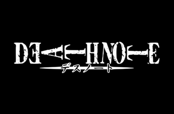

Death Note (デスノート Desu Nōto?, lit. "Caderno da Morte") é uma série de mangá escrita por Tsugumi Ohba e ilustrada por Takeshi Obata. Os capítulos do mangá foram serializados na revista semanal japonesa Weekly Shōnen Jump de 2003 até 2006, com os capítulos compilados em um total de 12 volumes tankōbon e lançados pela editora Shueisha. No Brasil, a série de mangá foi licenciada publicada em duas versões pela editora JBC, que também lançou as duas light novels da série. Em Portugal, o mangá foi licenciado pela Viz Media Europa e publicado pela Editora Devir.
A história centra-se em Light Yagami, um estudante do ensino médio que descobre um caderno sobrenatural chamado Death Note, no qual pode matar pessoas se os nomes forem escritos nele enquanto o portador visualizar mentalmente o rosto de alguém que quer assassinar. A partir daí Light tenta eliminar todos os criminosos e criar um mundo onde não exista o mal, mas seus planos são contrariados por L, um famoso detetive particular.
